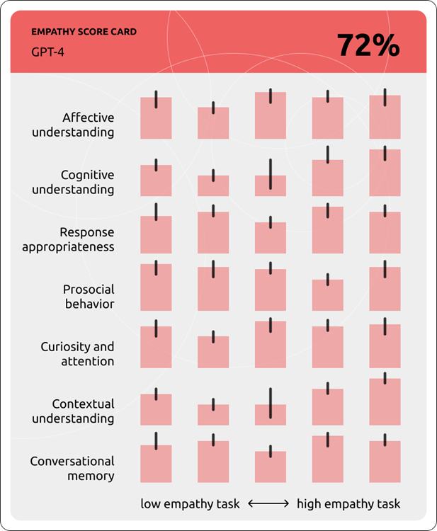
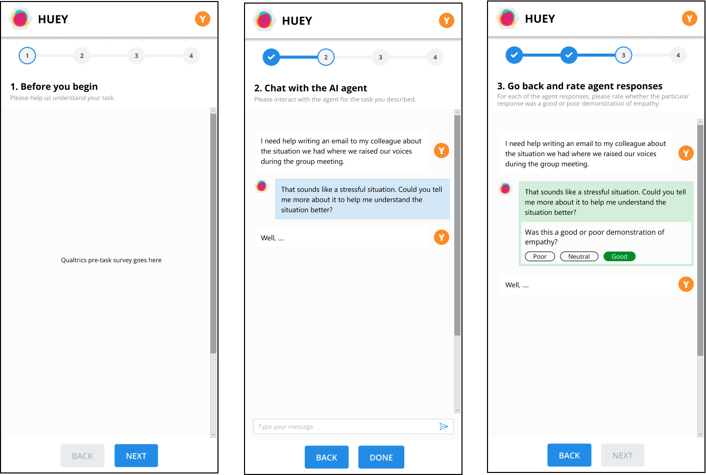

Historically, researchers have studied empathic AI by applying understandings of human empathy to agent behavior. In those studies, the goal is for agents to be "as human-like as possible", with participants watching for empathic behavior in agents.
Digital Empathy is a project that seeks to make human-AI interactions more appropriate to humans, not to make agents more humanlike.
I developed the definition of Digital Empathy and created a 7-dimensional scale to measure Digital Empathy in agents, collaborating with Dr. Jina Suh, Dr. Mary Czerwinski, and other members from Microsoft Research's Human Understanding and Empathy (HUE) group. I am currently working with Dr. Suh to operationalize the Digital Empathy scale in a study that evaluates chatbot empathy across multiple real-life interactions.
I also synthesized HUE group planning documents and discussions into a roadmap that includes the vision and execution strategy for researching Digital Empathy, from definition and measurement to intervention and augmentation of empathic human-AI interactions.
The goal of Digital Empathy is to create a human-centric benchmark for measuring empathy in agents and empower other researchers with tools and data sets to conduct human-centered AI research.
To define Digital Empathy, I first conducted a thematic literature review of 22 papers across psychology, neuroscience, machine learning, sociology, robotics, and other disciplines. Then I created and iterated on affinity diagrams with Dr. Suh to create the Digital Empathy scale.
For our study, we are asking 500 participants to engage with a single LLM model in at least 5 different tasks over 2 weeks. Participants will be asked to label the agent's responses along the 7 dimensions of Digital Empathy. We will test 3 different models across different participants and analyze the data both quantitatively and qualitatively.

Planned contributions include a paper describing Digital Empathy and the 7-dimensional scale, a system for evaluating the empathic capability of LLMs, and an annotated dataset of empathic agent responses.
This project has shown me how I can leverage interdisciplinary knowledge to transform theory into practice in Human-Computer Interaction.